RTR: Imperium Surrectum
RTR: Imperium SurrectumFertility
← all regions and settlements · wiki index
How rich a region's farmland is, on a scale of 1 to 14: the Fertility row on a region page. It describes the land but does not speed up population growth in RIS: the growth the game gives for each point of fertility is taken back by the Region Information Scroll.
| Fertility | Regions | Builds | Blocks | Effects | Units | Fertility | Regions | Builds | Blocks | Effects | Units |
|---|---|---|---|---|---|---|---|---|---|---|---|
| Farm level 1 | 15 | — | — | 1 | — | Farm level 2 | 27 | — | — | 1 | — |
| Farm level 3 | 41 | — | — | 1 | — | Farm level 4 | 54 | — | — | 1 | — |
| Farm level 5 | 93 | — | — | 1 | — | Farm level 6 | 96 | — | — | 1 | — |
| Farm level 7 | 88 | — | — | 1 | — | Farm level 8 | 42 | — | — | 1 | — |
| Farm level 9 | 32 | — | — | 1 | — | Farm level 10 | 29 | — | — | 1 | — |
| Farm level 11 | 11 | — | — | 1 | — | Farm level 12 | 9 | — | — | 1 | — |
| Farm level 13 | 5 | — | — | 1 | — | Farm level 14 | 3 | — | — | 1 | — |
Farm level 2
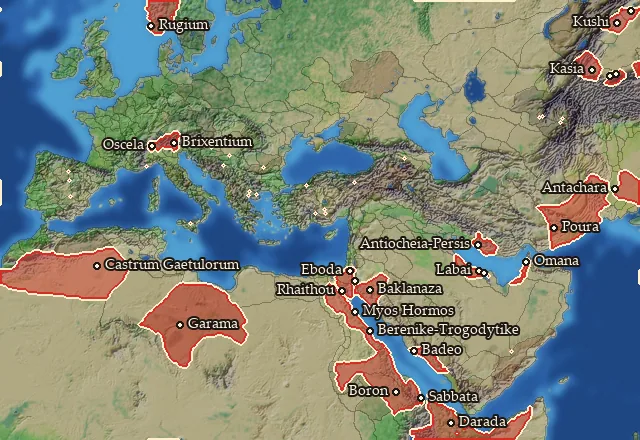
On 27 regions.
- Numeric effects where it is present: population growth -2 (Region Information Scroll)
Regions at this fertility (27)
Ailanitos Kolpos · Arabike Aigyptos · Blemmyia · Boreia Trogodytike · Chatriaia · Chattenia · Gaetulia · Garamantia · Gedrosia · Gusan · Hesperos Arabia · Kasiane · Kassanitis · Lepontia · Mpraysnrarqak · Notia Trogodytike · Omanitis · Ottorochora · Pharanitaia · Qudsrilqak · Rhaetia · Rugia · Snergaks · Taokene · Thamoudaia · Trogodytike · Tylos
Farm level 3
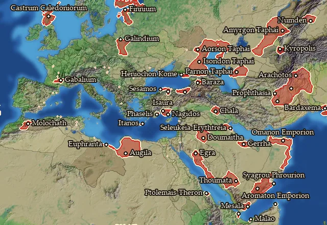
On 41 regions.
- Numeric effects where it is present: population growth -3 (Region Information Scroll)
Regions at this fertility (41)
Amastris · Amyrgia · Anaouon · Anatolike Homeritis · Anatolike Omanitis · Ano Aorsia · Arachosia · Aromaton Akroterion · Boreia Minaia · Caledonia · Chaldaia · Chalonitis · Chorzene · Deires · Drangiane · Eoritia · Epi Theron · Finnia · Gabalia · Galindia · Gerrhaia · Heniochia · Isauria · Isondaia · Itania · Kamuk · Kilikia Tracheia · Kyreschata · Lechienia · Libya · Malaotis · Mauretania Orientalis · Mossynoikia · Parnia · Phaselia · Pimolisene · Rhaabenia · Sachalites Kolpos · Ssabwat · Syrastrene · Syrtis
Farm level 4
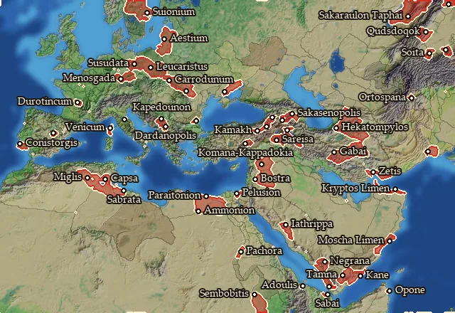
On 54 regions.
- Numeric effects where it is present: population growth -4 (Region Information Scroll)
Regions at this fertility (54)
Achasa · Adouli · Adramitia · Aestia · Agni · Ambronia · Ammonia · Aouranitis · Auseia · Autariataia · Chaurania · Coisstobocia · Conia · Corsica · Dardania · Dytike Aigyptos · Elisaria · Ergavicia · Gaetulia Septentrionalis · Gordyene · Kataonia · Kattabaneia · Lemovicia · Libanophoria · Lugia · Lychnitis · Matiane · Mikra Armenia · Nagran · Notia Basilike Skythia · Notia Karmania · Omana Kolpos · Oponis · Oreitaia · Palmyrene · Paraitakene · Paropamisadai · Parthia · Pelousiake · Qudsdo · Sabaike Aithiopia · Sakaraulia · Sakasene · Sassinia · Semnonia · Skythenia · Suionia · Taochia · Tenessis · Triakontaschoinos · Tylisia · Volcaea · Yathrib · Zabrutuxun
Farm level 6
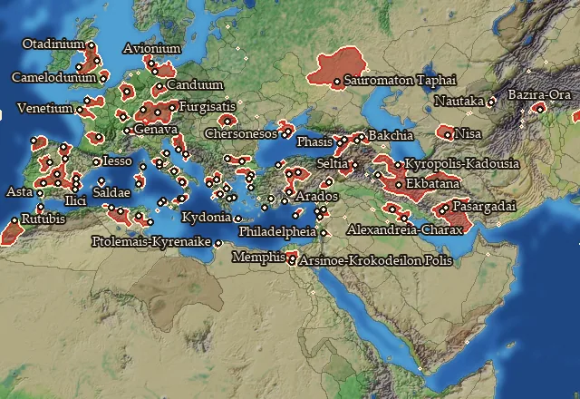
On 96 regions.
- Numeric effects where it is present: population growth -6 (Region Information Scroll)
Regions at this fertility (96)
Ager Gallicus · Aitolia · Anatolike Sogdiane · Arevacia Septentrionalis · Arsinoites Nomos · Artabria · Arwad · Assakenia · Attike · Avionia · Baliares Maiores · Barke · Boihaemum Occidentale · Brigantia · Cadurcia · Cantabria · Carpetania · Chaonia · Charakene · Chattia · Contestania · Contestania Meridionalis · Eburonia · Edetania · Elymia · Emesene · Epetia-Salonitis · Epikrateia · Faliscia · Hasta · Hellenike Mariandynia · Helmantike · Helvetia Vetus · Iberia · Iliensia · Kadousia · Kambysene · Kappadoxia · Kardia · Kibyratis · Kirtan · Kolchis · Kommagene · Korinthia · Kounindia · Kydoniatis · Kyrnos · Lacetania · Langobardia · Lemannus Inferior · Lesbos · Liburnia · Lingonia · Lucania · Lykaonia · Magnesia · Mamertina · Massyas · Mauretania Meridionalis · Mauretania Septentrionalis · Media · Megale Chersonesos · Memphites Nomos · Mikra Chersonesos · Nisaia · Odrysia · Ordovicia · Orestis · Oretania · Otadinia · Pamphylia · Paphia · Pasargadaia · Pedias Atropatene · Pentria · Persia · Phasis · Propontis · Rabbat Amman · Rhegion · Rhodos · Salda · Sauromataia · Sittakene · Taronitis · Tektosagia · Teuriscia · Thapsos · Treria · Trinobantia · Turdulia · Velzna · Venellia · Venetia-Aremorica · Vindelicia · Zama Meizon
Farm level 10
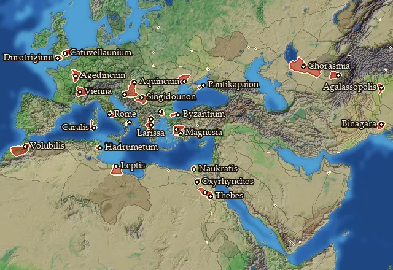
On 29 regions.
- Numeric effects where it is present: population growth -10 (Region Information Scroll)
Regions at this fertility (29)
Ader Lepqi · Adrumet · Agalassia · Allobrogia · Bosporos · Catuvellaunia · Chorasmene · Durotrigia · Emathia · Eraviscia · Eumolpia · Karaly · Kimmerikos Bosporos · Latium · Lydia · Magna Graecia · Maiandros · Mardyenia · Mauretania · Menelaites Nomos · Olbiana · Oxyrhynchites Nomos · Pathyrites Nomos · Portikania · Savia · Senonia · Skordiskia · Thessalia · Thinites Nomos
Farm level 11
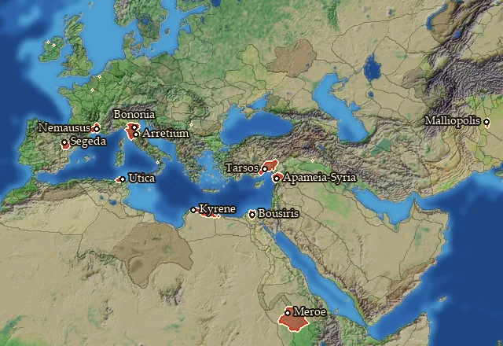
On 11 regions.
- Numeric effects where it is present: population growth -11 (Region Information Scroll)
Regions at this fertility (11)
Apamene · Arecomicia · Bellia · Boiaea · Bousirites Nomos · Etruria · Kilikia Pedias · Kyrenaike · Mallia · Medwi · Xatiq
Farm level 13
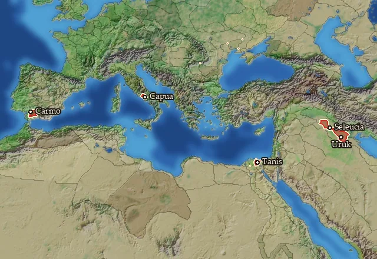
On 5 regions.
- Numeric effects where it is present: population growth -13 (Region Information Scroll)
Regions at this fertility (5)
Campania · Mesopotamia · Nile Delta · Orchoe · Turdetania
Farm level 1
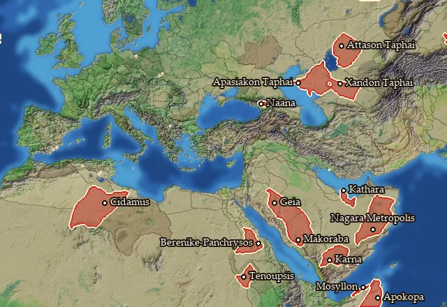
On 15 regions.
- Numeric effects where it is present: population growth -1 (Region Information Scroll)
Regions at this fertility (15)
Aidaia · Apasiakaia · Attasia · Azania · Entos Smyrnophoros · Iobaritaia · Katharrheia · Mosyllia · Noubaia · Phazania · Qarnawu · Sarakenia · Soanaia · Tsendzot · Xandia
Farm level 5
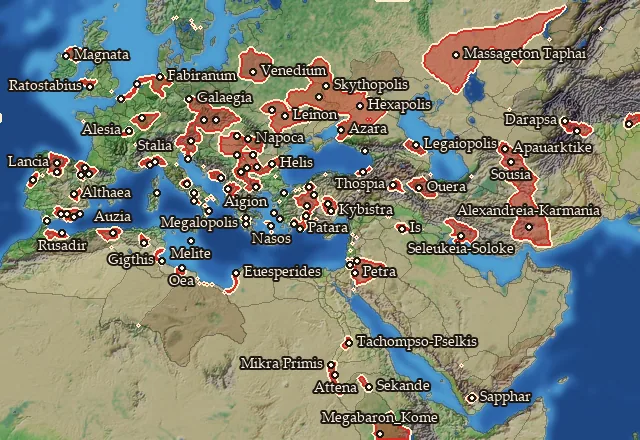
On 93 regions.
- Numeric effects where it is present: population growth -5 (Region Information Scroll)
Regions at this fertility (93)
Achaia · Albocensia · Ankobaritis · Ansamenia · Aorsia · Apauarktikene · Ardiaea · Arkadia · Arktonnesos · Asturia · Audoumbaria · Auzica · Basilike Skythia · Basoropeda · Bastetania · Bastetania Maritima · Bastetania Occidentalis · Bessike · Boihaemum · Buridavensia · Calpe · Chaucia · Chios · Cotinia · Darapsia · Dodekaschoinos · Elymais · Epichos · Euesperidai · Euonymitaia · Frisia · Garsaouritis · Genuatea · Georgike Skythia · Getaia · Hekatompyle · Hellenike Makronia · Hesperos Ariane · Histria · Homeritis · Idoumaia · Illyria · Ingaunia · Kalbia · Kapisene · Kappadokike Kilikia · Karmania · Koraxia · Kroton · Kyklades · Legaia · Lusonia · Lykia · Madabitis · Magnatia · Maiotis · Maleth · Mandubia · Marcomannia Vetus · Massagetaia · Mastienia · Mediomatricia · Megabaria · Megale Phrygia · Menapia · Moesia · Naissitania · Napocaea · Neuria · Nomadike Skythia · Noricum · Olbiana-Sardinia · Olcadia · Paelignia · Pedeme · Pisidia · Poseidonia · Raqemo · Rush Adir · Salone · Samnium · Samos · Siluria · Sirtibis · Suessetania · Synnadia · Tracheia Atropatene · Triballia · Turdulorum Oppida · Vaccaea Occidentalis · Vasconia · Venedia · Woyxat
Farm level 7
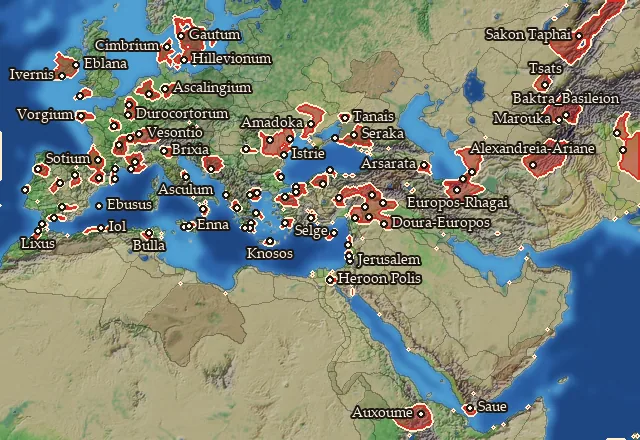
On 88 regions.
- Numeric effects where it is present: population growth -7 (Region Information Scroll)
Regions at this fertility (88)
Aeduia · Akragas · Ambrakikos Kolpos · Anatolike Baktriane · Antheia · Aquitania · Arevacia · Argolis · Ariane · Arvernia · Axoumitis · Ay-Bushum · Ay-Khol · Bebaxal · Bithynia · Boreia Hyrkania · Borysthenes · Bracarensia · Bruttium · Carnutia · Carpiania · Cenomania · Cheruscia · Cimbria · Delmatia · Dumnonia · Eblania · Edonis · Elysicea · Emporitia · Euboia · Eurymedoneia · Gautia · Gylakeia · Halmyris · Heroopolites Nomos · Hillevionia · Hydaspes · Hyrkania · Ilergetia · Ioudaia · Ivernia · Kappadokia · Karia · Kaspeiraia · Kaspiane · Khalab · Lakonia · Liksho · Malaka · Mapharitis · Messenia · Minoa · Mygdonia · Mygdonia-Syria · Mysia · Nervia · Nikephoreia · Notia Bithynia · Oretania Meridionalis · Osismia · Osrhoene · Oxos · Paphlagonia · Phanagoreion · Picenum · Remia · Rhagiane · Sakaia · Salamina · Sargetiaea · Segobrigia · Sequania · Shamerayin · Sikelia · Sinopeia · Sirakene · Sophene · Sugambria · Tagia · Tanaitis · Ting · Tingene · Tsatsene · Tyrasia · Vettonia · Vocontia · Zidun
Farm level 8
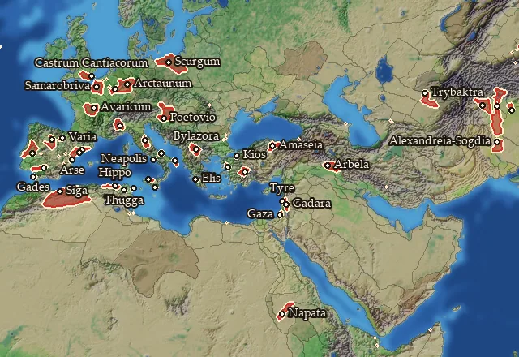
On 42 regions.
- Numeric effects where it is present: population growth -8 (Region Information Scroll)
Regions at this fertility (42)
Agadir · Ambiana · Anatolike Chorasmene · Arbelitis · Aspis · Bastarnia Vetus · Beronia · Biturigia · Calabria · Cantiacia · Cessetania · Daunia · Dekapolis · Elis · Gandaritis · Gazaia · Hipparia · Ilercavonia · Kaikia · Kathaia · Kianos Kolpos · Lusitania · Napa · Paionia · Pandoouia · Parthenope · Phrygia · Pontos · Saguntia · Shigan · Sogdia-Indos · Taurinia · Tauriscia · Tobgaxag · Treveria · Turdetania Septentrionalis · Ubia Vetus · Umbria · Vaccaea · Xupon · Ziz · Zur
Farm level 9
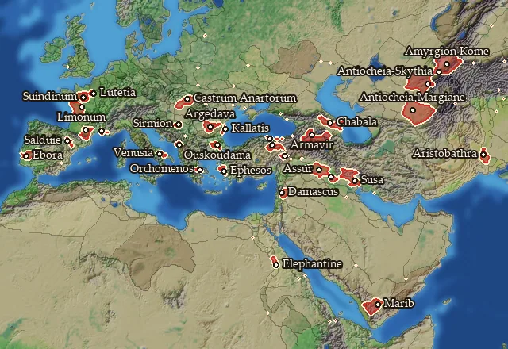
On 32 regions.
- Numeric effects where it is present: population growth -9 (Region Information Scroll)
Regions at this fertility (32)
Albania · Amantinia · Anartia · Anatolike Amyrgia · Apolloniatis · Apulia · Assyria · Boiotia · Brenaia · Ceiagisia · Celticia · Cenomania-Aulercia · Damashq · Hieratikos Pontos · Iaxartes · Ionia · Kallatisia · Labeataia · Margiane · Megale Armenia · Melitene · Mousikania · Ombites Nomos · Parisia · Pictonia · Sabaia · Salluvia · Saramene · Sedetania · Sogdiane · Sousiane · Tectosagia
Farm level 12
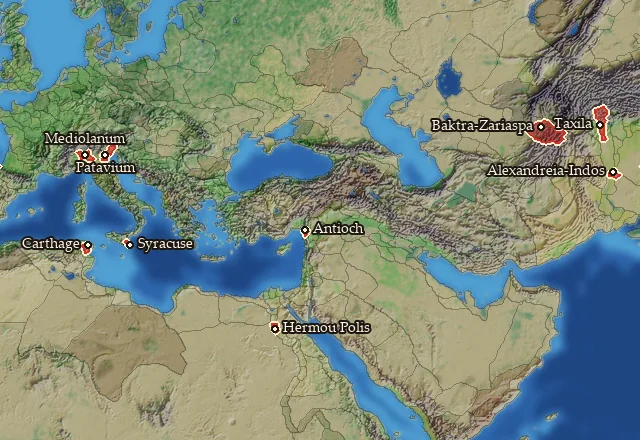
On 9 regions.
- Numeric effects where it is present: population growth -12 (Region Information Scroll)
Regions at this fertility (9)
Arsa · Baktriane · Hermopolites Nomos · Indos · Insubria · Qart Hadasht · Syria · Trinakria · Venetia
Farm level 14
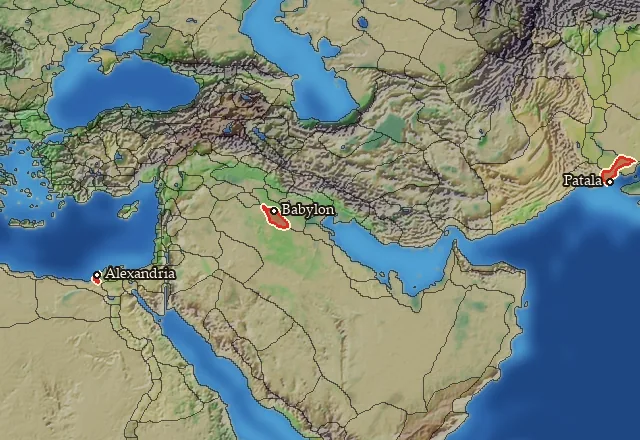
On 3 regions.
- Numeric effects where it is present: population growth -14 (Region Information Scroll)